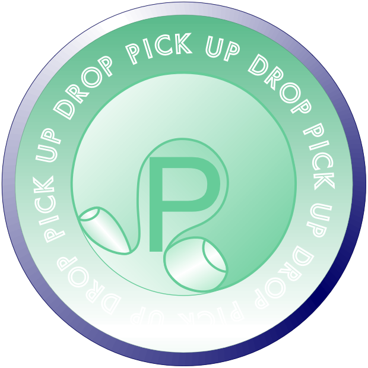
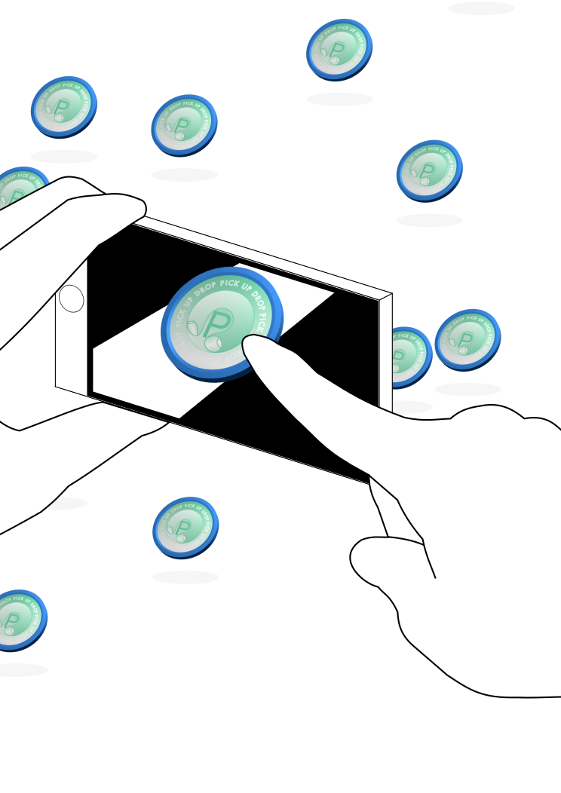
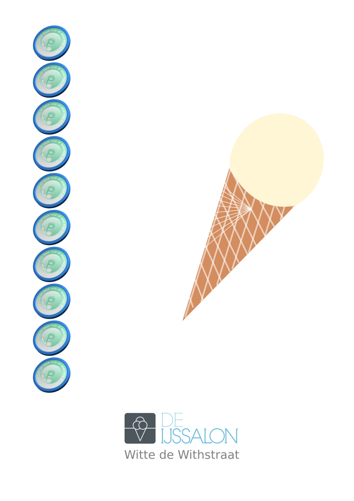
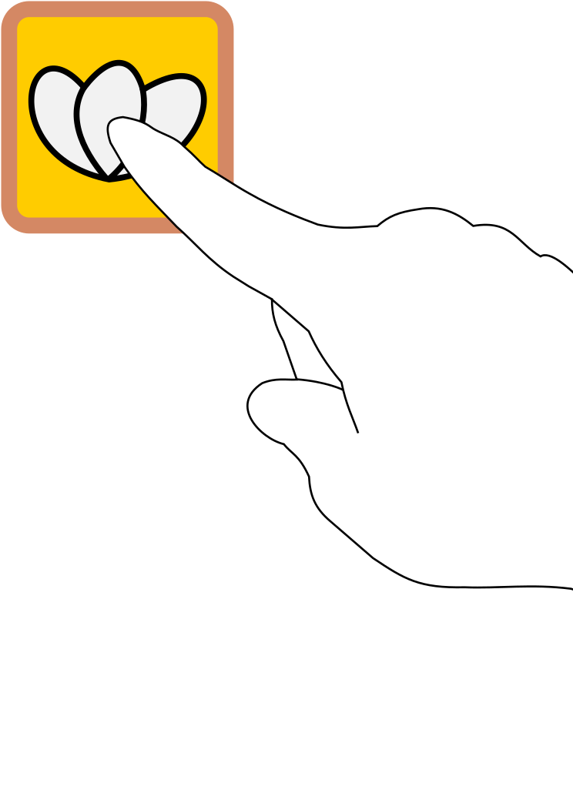

×
Drop Pickcoin
Do you want to drop a Pickcoin (€0.10)?
×
Pick Up Pickcoin
Do you want to pick up €0.10?
"Imagine money is randomly lying everywhere on the street and people pick it up and use it as they need. If you don't need that much, drop it casually, just like stones."

TOUCH PICKCOIN TO START
×
How to Pickcoin
  
<
>
facebook event page
CLOSE
Spend
info